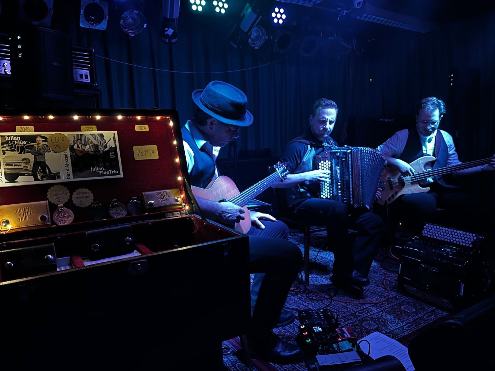

Marc Scheidegger
Gitarrist und Sänger – live mit dem Julian von Flüe Trio, Mala Oreen und Boogiefox, als Begleitmusiker im Studio und mit eigenen Übe-Tools für alle, die ein Instrument lernen.
Live auf der Bühne

Julian von Flüe Trio
Akkordeon, Gitarre und Bass – seit 2014 unterwegs, mit mehreren CD-Produktionen und einem Auftritt in der SRF-Sendung Potzmusig.
Mehr erfahren
Mala Oreen
Songs mit Fiddle, Mandoline und mehrstimmigem Gesang. Seit 2019 zahlreiche Konzerte.
Mehr erfahren
Boogiefox
Trio mit Anet Zemp und Ralph Sonderegger. Seit 2013 zahlreiche Konzerte.
Mehr erfahren
Bühne, Studio, Festival
Vom Jazzfestival Willisau mit Kubus über Clubtouren mit Moë und die Open Mic Band im Kaufleuten Zürich bis zu Kids on Ice im Hallenstadion mit Andrew Bond: Seit über 25 Jahren spiele ich in Bands, begleite Sängerinnen und Sänger und arbeite im Studio.
Meine Übe-Tools
Kostenlose Werkzeuge im Browser – für das tägliche Üben auf Gitarre, Ukulele und Keyboard.

Würfel
Zufallsgenerator für die Übezeit: Stammton, Chromatik, Akkorde, CAGED-Formen und mehr – würfeln statt immer das Gleiche üben.
Tool öffnen
Übe-Timer
Mehrere Timer für ein ganzes Übeprogramm. Sie laufen nacheinander ab, mit Gong am Ende jeder Übung und einem Journal für Notizen.
Tool öffnen
Instrumentengrafiken
Akkorde und Formen auf Gitarre, Ukulele und Keyboard sichtbar machen – klar dargestellt, mit hervorgehobenen Grundtönen.
Tool öffnen